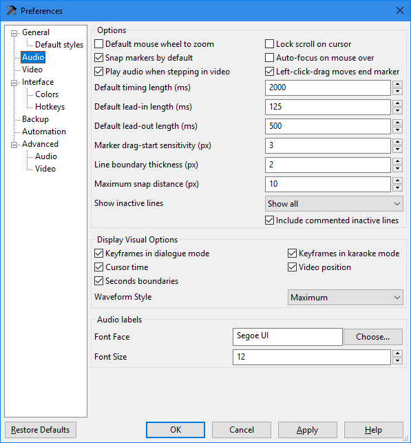
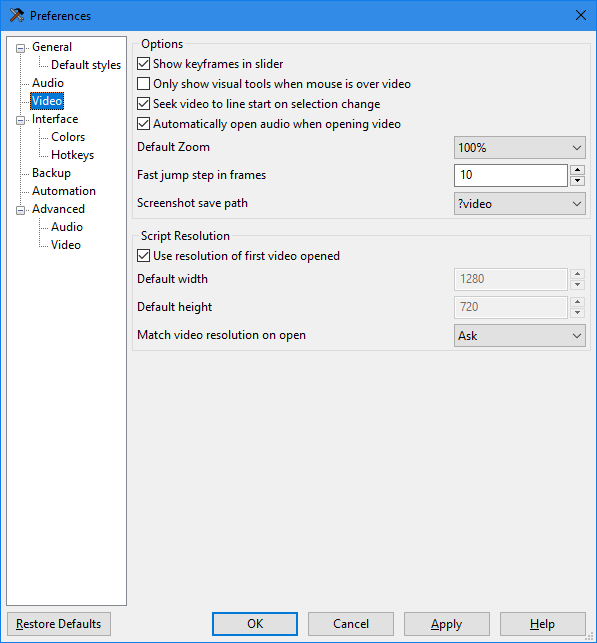
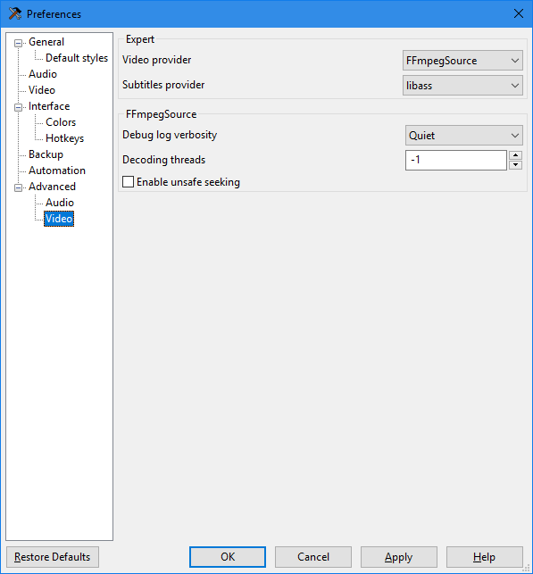
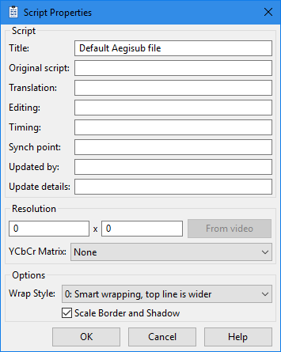

Aegisub & Other Tools
Tools
The first thing you’ll need to do is make sure your tools are in order. Typesetters will need more tools than most other roles in fansubbing and they need to be configured properly.
Here is a list of tools you will want to download:
- Aegisub
- It is highly recommended to use arch1t3cht’s fork, which includes Dependency Control, several critical fixes , several new features, and is in general the most actively maintained fork.
- If you are, for some reason, interested in the history of Aegisub and the recent-ish forks, you can read about it in a somewhat up-to-date article on some Fansubbing Wiki.
- A font manager
- Not all font managers are equal. Choose the one that works the
best for you. Some important features might include:
- Performance with large font libraries.
- Add fonts from folders, not just installed fonts.
- Activate fonts for use without installing.
- Organize fonts in a meaningful way.
- Works on your OS.
- Free Options
- Paid (Note: can be found free on certain websites)
- Not all font managers are equal. Choose the one that works the
best for you. Some important features might include:
- Software for motion-tracking
- x264 binary
- Download the latest binary for your platform. (
x264-r3015-4c2aafdat the time of this edit.)
- Download the latest binary for your platform. (
- Adobe Photoshop and Illustrator
Configuring Aegisub
NOTE: the following assumes you have installed the recommended build mentioned above.
For now, just change your settings to reflect the following. If you’ve made any changes previously for another fansub role, be careful not to overwrite those. When in doubt, ask someone with Aegisub experience. Settings can be accessed via View > Options or with the hotkey Alt + O.


 Aegisub 8975-master-8d77da3 preferences
Under File > Properties, there is an additional option for the YCbCr Matrix of the script. This option will set the color space of the script, and you will most likely be working with TV.709, or BT.709. If you are subtitling with a video present (using Video > Open Video...), this option as well as the script resolution will automatically be set to match the video source.
 Aegisub 8975-master-8d77da3 script properties
For most cases with modern fansubbing, the BT.709 color space will be used as opposed to the legacy BT.601 color space. If you want a more in-depth explanation of color matrices and how these two are different, visit Maxime Lebled’s blog, but the gist of it is this: BT.601 is for Standard Definition video and BT.709 is for High Definition video1.
Manually setting the script to BT.601 could irreversibly ruin the colors of any typesetting, dialogue, or kfx already in the script. Even worse, some video renderers will read this setting from the muxed subtitles and render the video to match it.
If you are working on a DVD or something in Standard Definition, you can change this to BT.601 manually in File > Script Properties. However, not all Standard Definition video will be BT.601, so when in doubt, ask the encoder or check the source’s MediaInfo if they are not available.
The “Subtitles Provider”
The recommended build of Aegisub comes pre-equipped with libass, so no manual settings change is needed. The following is a brief history of subtitle renderers.
Just a few years ago, there was a pretty clear consensus on which subtitle renderer to use for anime and softsubs. These days, not so much. It used to be that VSFilter was the only supported renderer by most fansub groups. VSFilter, being the first of its kind, is considered the original subtitle renderer. However, it was eventually replaced with xy-VSFilter, and then later replaced with xySubFilter because VSFilter and xy-vsfilter were not performing as well with the resource requirements of newer subtitles. However, VSFilter, and its derivatives xy-vsfilter and xySubFilter, only support Windows operating systems. They have often been used in codec packs2 for players we don’t recommend, such as MPC-HC.
By 2015, however, xySubFilter development had come to a halt and since then, libass has made many improvements both in speed and compatibility with advanced subtitling in part due to contributions from members of the fansub community. At the end of the day, which renderer you choose is up to you, but we recommend libass. It is maintained, cross-platform, able to handle most typesetting, and has been integrated into many commercial and open-source software products. Libass is used in the cross-platform player mpv, that we recommend for all anime-viewing purposes.
Hotkeys
As you develop your skills more and begin to integrate automation scripts into your workflow, you will probably want to consider adding hotkeys to cut down on time navigating menus. These can be accessed via Interface > Hotkeys in Aegisub’s Options menu. We’ll let you decide on those yourself, however, and move on for now.
For further reading on this, visit the Wikipedia pages for Standard Definition video, High Definition video, and the BT.601 and BT.709 color spaces.
With the development of mpv, codec packs and player add-ons are no longer required.